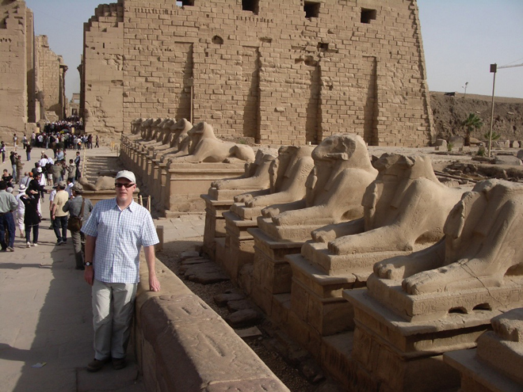
Big, bold, and hugely ambitious, the mammoth Temple of Karnak complex is one of Ancient Egypt's grandest building projects. Every Pharaoh added and amended the buildings here during their reign, stamping their seal on the kingdom's most revered religious sanctuary. For Karnak was the House of the Gods, and its glories were to be feted by all.
The complex is entered via a grand procession way, flanked on both sides by ram-headed sphinxes. These once ran all the way to Karnak from Luxor Temple (in downtown modern Luxor). During the Ancient Egyptian annual Festival of Opet, the statues of Amun, Mut and Khonsu were paraded out of Karnak, down this avenue to Luxor Temple.
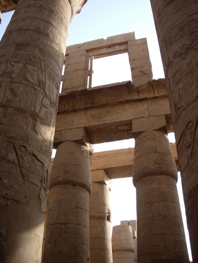
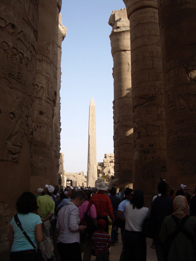
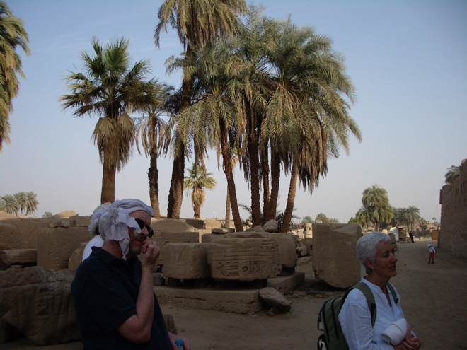
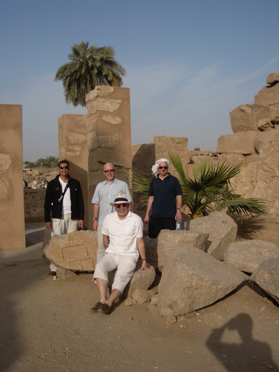
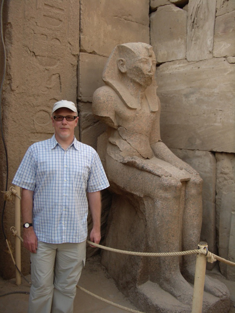
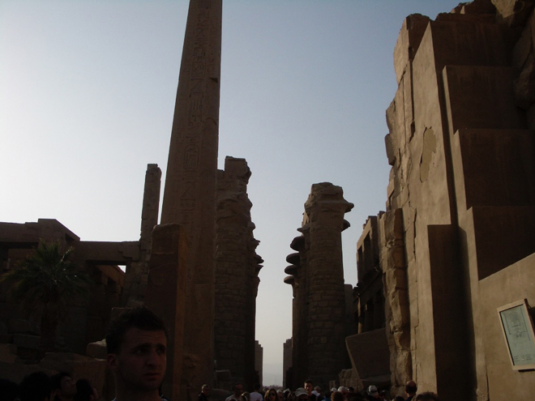
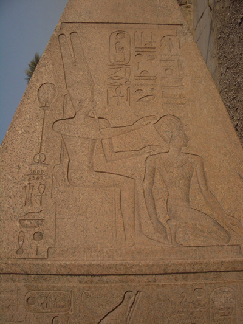
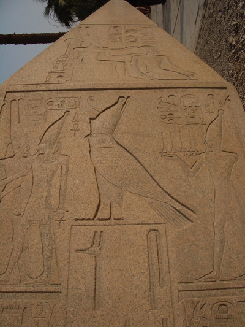
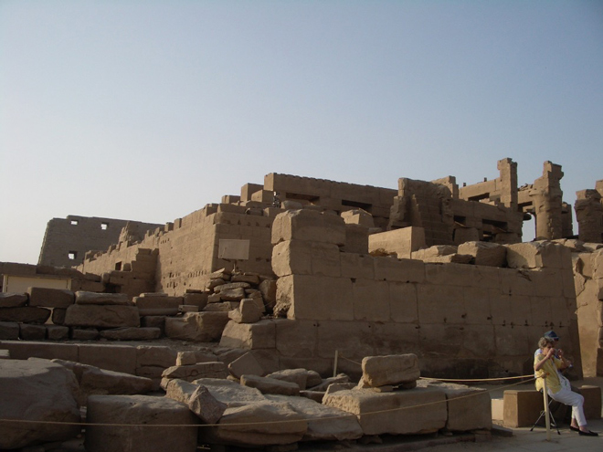
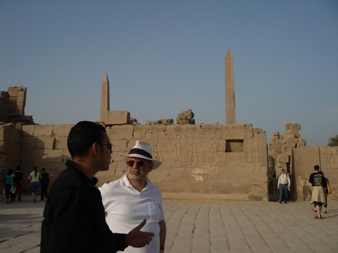
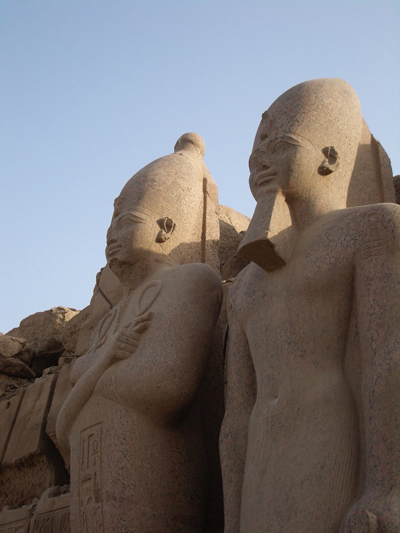
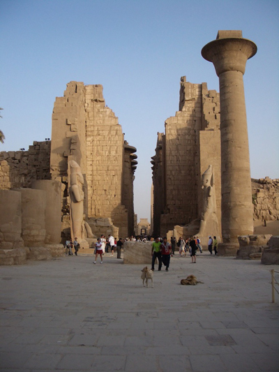
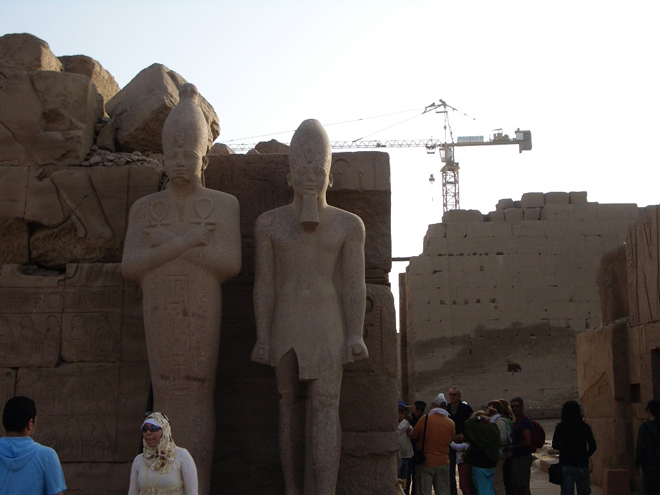
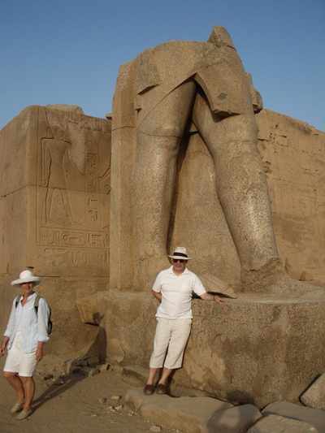
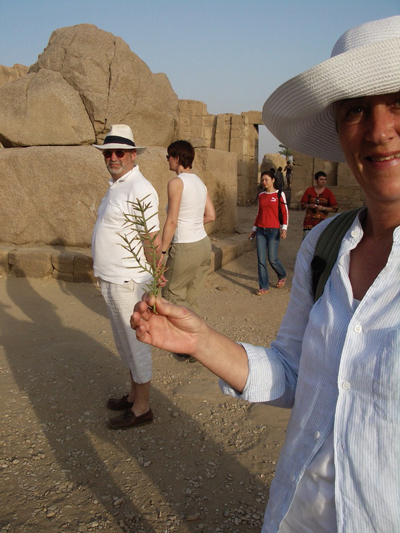
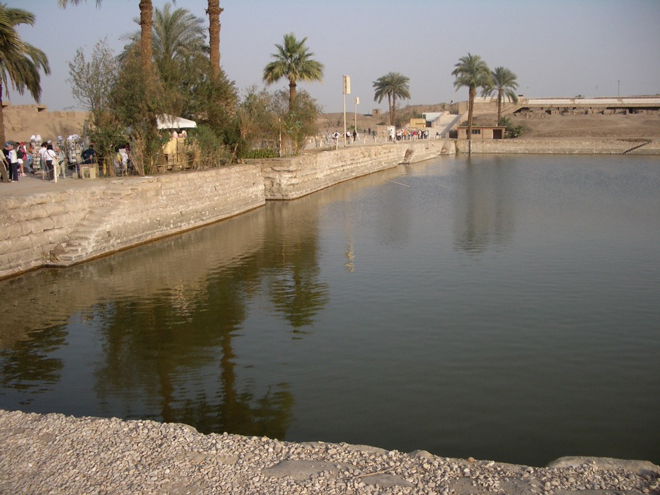
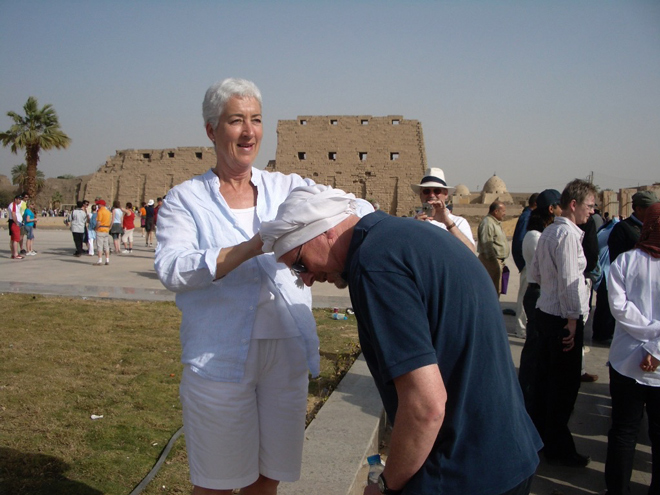
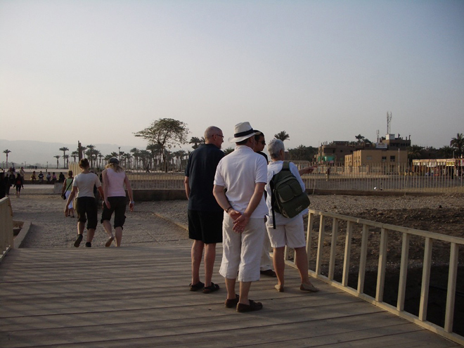
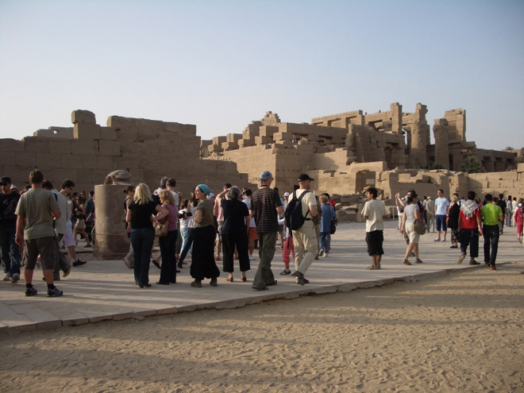
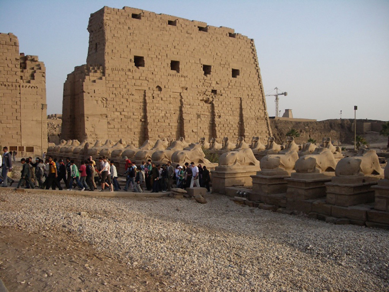
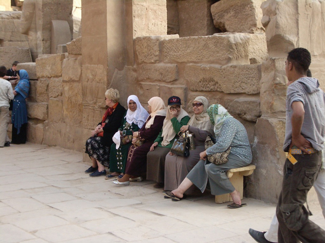
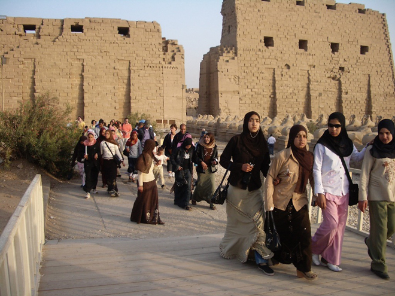
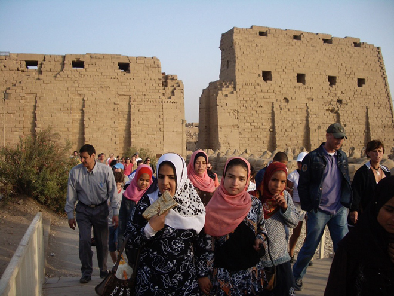
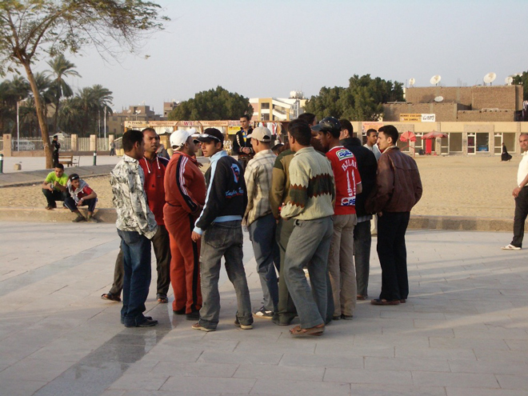